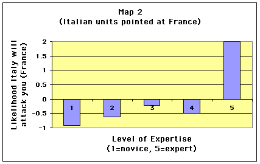
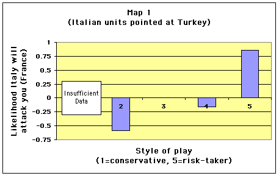
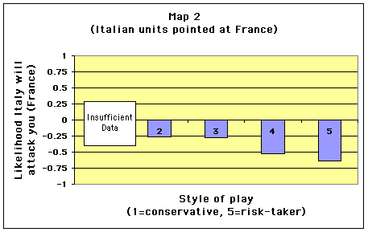

About half the survey was there just to lend the appearance that it was, indeed, an experiment in associating risk-taking with expertise. The other half was meaningful, but not for the reason I put forth. The real experiment is more along the lines of a psychology experiment having to do with perception. The situation presented in the survey was not from an actual game, but it was inspired from something that happened in an actual game. Before I go into the experiment iteslf, a little background...
At World DipCon last year, in Chapel Hill, NC, I was in a game in which I was playing Austria. Russia and Turkey had taken over the Balkans. Russia was setting up to attack me, and Turkey claimed to be willing to help me against Russia. It was during a fifteen-minute diplomacy period that I had a couple of minutes alone to study the board to figure out what the best course of action was. I stepped around the board watching it, and all of a sudden, I was struck with the knowledge that Turkey was not working with me but with Russia, and was going to use Bul to hit Ser, cutting my support, allowing Russia to take Bud with Rum. I was certain of it.
My next thought was to wonder why that thought came to me right then, when nobody had said anything to me to that effect, and Turkey until then had me convinced that she [sic... one of the few women who I've come across in FTF play] was working with me. I looked at the board a bit more, and then I saw it. All of Turkey's units were aligned on the board so that they were pointing towards Austria in an arrow-shaped formation.
Now obviously, that formation did not mean for certain that Turkey was going to attack me. But subconsciously, that was how my brain interpreted the visual input it received. Indeed, the arrangement of units was most likely a chance occurence (unless Turkey subconsciously arranged them that way because she was going to attack me). As it turns out, I was right about Turkey. I went with my hunch, assumed that Turkey was screwing me over and moved accordingly, allowing me to save Bud that turn. Unfortunately, I had no help, they had no enemies, and I was subsequently overrun by the juggernaut.
Afterwards, I found the whole experience quite interesting. It might have been possible that Turkey had no intention of attacking me. There was really no way for me to be certain of Turkey's intentions, despite the alignment of units. Whether the arrangement of units was a chance occurence or a subconscious result of Turkey's plans, I'll never know. But regardless, it was the arrangement that triggered the thought in my head. I realized then that the alignment of units was far from solid evidence, so really, I didn't know anything for sure. But it was that quirk of my perception that planted the seed in my head. I am relatively sure that if the units had not been aligned the way they were, it would not have occured to me at that point that Turkey might be on the verge of stabbing me.
What makes this very interesting are the implications if my theory were correct. If so, when playing face-to-face Diplomacy, one could surreptitiously re-orient units on a board (without changing their locations) and have the possibility of manipulating other players. This could be done if you are the one moving units while a turn is being adjudicated, and it could also be done with the appearance of "fiddling" with units as you study the board during a negotiation period when most people are away from the table. A suspicious player might re-check the board, only to find that no units have been relocated.
Think of it. How often do you find yourself wishing you could convince another player that they are about to be attacked by somebody (regardless of whether it's true or not)? Sometimes you can't openly talk to them--maybe "somebody" is your ally and you can't afford to risk warning somebody of an impending attack, or openly trying to convince somebody to attack your ally). Other times, you know that you simply won't be believed because you have a vested interest that makes it clear that you are not being impartial--if you are facing a strong longtime two-player alliance and tell one player that he's about to get stabbed by his ally, he'll rarely believe you. And in some cases, the person you want to convince may simply not be willing to talk to or listen to you because of a rift that occured earlier in the game.
But what we have here is a way to potentially do what you want without saying a word, without openly making contact, without being ignored by somebody who assumes you are lying. And yet, by "fiddling" with the map, you can manipulate their perception and perhaps plant that seed in their head. It might not work, and even if the thought that they are about to be attacked enters their head, they may not become convinced of it. But even if it works a very small percentage of the time, isn't it worth trying to turn another player's subconscious to your advantage?
I decided to see if this perception thing were just me, or if it was something that could be reproduced in other people as well. Would the arrangement of units subconsciously affect other people's assessment of a given situation? I thought I'd set up an experiment to find out.
Each person who looked at the "risk-taking" survey was was presented a scenario, shown a map, and asked a few questions. Everyone read the same scenario description, and was asked the same set of questions -- you are France and are asked about the likelihood that Italy is setting up to attack you and/or Turkey. However, there were in reality, two maps.
Both had exactly the same units in identical locations. The difference was in the alignment of units. In one map, the Italian units were oriented so that they "pointed" towards France while French units were pointing away from Italy. If my perception theory were correct, the idea was that Italy would look poised to attack France, while France looked vulnerable to attack. In the second map, the Italian units were pointed towards Turkey (Italy was not poised to attack France), and some of the French units were pointed towards Italy (France was not as vulnerable to attack). Thanks to Manus' scripting magic, half the players who read my survey were presented with one map, while the other half were presented with the other. You can see map 1, and map 2.
My hypothesis was that the physical placement of units on a map will affect peoples' perception and interpretation of a given situation, even if they don't realize it. Of course, explaining my hypothesis or drawing explicit attention to the orientation of units ahead of time would have affected the integrity of the experiment. So I made up the risk-taking aspect so that the readers wouldn't really know what the experiment was, making it a blind study.
Before discussing the results, I'd like to make a comment on my survey and the resulting data. I had asked people to rate the likelihood that Italy was setting up to attack France, followed by a question asking the likelihood that Italy was setting up to attack Turkey. I had thought that these would be mutually exclusive. In other words, I thought that if a player thought it was very likely that Italy was setting up to attack France, it would not be unlikely that Italy was setting up to attack Turkey, and vice versa. This turned out not to be the case--it was not uncommon for people to answer "somewhat likely" or "very likely" to both questions. In retrospect, this is not surprising. Italy may have had the skill/luck to get into a position where he was set up to attack either France or Turkey, so a high likelihood for one question would not exclude a high likelihood in the other.
What I really wanted to know-- that which I expected to be affected by the subconscious perception of the map--was which was the greater likelihood. A better way of asking what I wanted to know would have been to get rid of those two questions and replace them with one asking "Do you think it is more likely that Italy is setting up to attack you or Turkey?" That would have forced the answer to be mutually exclusive. Because of my choice of questions, I ended up calculating the greater likelihood from the answers I had. I took the likelihood that Italy was setting up to attack France and subtracted the likelihood that Italy was setting up to attack Turkey (both on a scale from 1 to 5). A positive result meant that it was more likely that Italy was setting up to attack France than Turkey, and a negative result meant that it was less likely; a zero means they are equally likely.
This captures the relative magnitude of the difference in a person's reply. A +2 value means they are more convinced that France is the target than a +1 value. What is lost is the absolute magnitude of the data. Replies of "very likely" and "not sure," respectively, will give you the same value as replies of "somewhat likely" and "somewhat unlikely." There isn't necessarily anything wrong with that, since it is the differences at a gross level that I was interested in, but I thought it was worth pointing out. At any rate, what you will see plotted in the charts below is the result of the subtraction described above. Now, on to the data.
In the data below, I only included responses in which a person answered every question. After filtering out the replies that didn't meet that criterion, I was left with 446 responses. Of those, 217 had seen map 1 in which Italian units were oriented to point towards Turkey, and 229 had seen map 2, in which Italian units were pointed to towards France.
I processed the data twice along two different dimensions. First, I broke the data down according to peoples' stated level of expertise. Then, I broke the same data down according to peoples' style of gameplay (from conservative to risk-taker).
The table below shows the percentage of respondents in each of the categories of expertise. The results for the two maps did not differ tremendously.
| Level of expertise | Percentage of respondents who saw map 1 (units pointed at Turkey) |
Percentage of respondents who saw map 2 (units pointed at France) |
|---|---|---|
| Novice | 13. 8% | 14.4% |
| "Novediate" | 23.0% | 22.7% |
| Intermediate | 36.4% | 41.0% |
| "Interpert" | 18.9% | 18.3% |
| Expert | 7.8% | 3.5% |
| Total | 99.9%, 217 respondents (Not 100% due to roundoff error) |
99.9%, 229 respondents (Not 100% due to roundoff error) |
The likelihood subtraction calculation was done for all respondents. Then, the results were averaged for each category of level of expertise. Figures 1 and 2 below show charts of the averages for map 1 and map 2, respectively. Remember that the people taking the survey are playing France, and are looking at Italian units pointed either at them or at Turkey.
For map 1 (Italian units pointing towards Turkey), it is interesting to note that on average, players in every category thought that Turkey was the more likely target except for the "Interpert" category (the category between intermediate and expert). For four of the five categories (amounting to over 80%) of the respondents, the average person playing France who saw units pointed at Turkey, thought Turkey was the more likely target. Very interesting. As for the "interpert" category, the difference is statistically significant. However, I'm not quite sure what the explanation is for why this category deviates from the others.
Figure 1: Results as a function of level of expertise for map 1 (units pointed at Turkey)

Figure 2: Results as a function of level of expertise for map 2 (units pointed at France)
Next, we look at a similar pair of charts, but this time for the data broken down by style of play (conservative to risk-taker) instead of by level of expertise. Here is a table showing the breakdown of respondents into the various categories. (Because the number of players in the "most conservative" category was so low, I've labeled that category as insufficient data in the charts that follow.)
| Style of gameplay | Percentage of respondents who saw map 1 (units pointed at Turkey) |
Percentage of respondents who saw map 2 (units pointed at France) |
|---|---|---|
| Most conservative | 0.5% | 2.2% |
| Somewhat conservative | 25.3% | 26.6% |
| Neutral | 16.1% | 22.7% |
| Small risk-taker | 51.2% | 43.7% |
| Large risk-taker | 6.9% | 4.8% |
| Total | 100%, 217 respondents | 100%, 229 respondents |
The chart below is for map 1, in which the Italian units were pointing at Turkey. Here we see another interesting result. The more conservative a player, the more likely it was that the player would be swayed by the unit orientations into thinking that Turkey was the target. Interestingly, not only were the highest risk-takers not swayed, but their interpretation was the opposite of what would be expected under the hypothesis. They strongly thought France was the target.

And the last chart, for map 2 (Italian units pointed at France) is shown below. The chart is almost flat, with all categories thinking that Turkey was the most likely target. I don't have a good explanation for what that is, nor do I have a good explanation for why the figures for map 1 and map 2 are so different in appearance.

So there you have it. Some interesting results, but nothing uniformly compelling or conclusive. I already mentioned one problem with the questions I asked in my original survey. A second problem is that I don't think my scenario was a great one. I think it was a bit too heavily slanted to suggest that Turkey was the target, regardless of which map you were looking at. (This is not pure speculation, but is something that is also supported by the data.) That, coupled with my less-than-ideal choice of questions, made it hard to determine when my experiment got the expected response, even if it did.
For example, let's say John Doe saw map 1 (pointing at Turkey) and my subtraction calculation gave a -3, indicating that Turkey was the target. Let's say instead that John Doe saw map 2 (pointing at France) and the subtraction calculation gave a -1. From that, since all other things remained equal, you might conclude that the arrangements of units caused the difference in perception. However, since his reply was still negative, the data would still show him as thinking Turkey the more likely target. Even though the unit orientation did affect him, the effect is missed because my calculation still gave a negative number. Put another way, the effect is there but is missed because it was not strong enough to change his mind about the most likely target, due to the slant in the scenario. Perhaps if I had come up with a more balanced scenario, less slanted towards Turkey being the target, that same effect on John's perception would have led to values of -1 and +1 instead of -3 and -1. In that case, the effect would not have been missed, because it would have been seen as having changed his mind.
One solution to this problem would be for me to re-process the data with a different calculation. Drawing a line at zero, as I did, made it hard to view the anticipated effect because it was only clearly noticed if it caused a people to be on one side of zero for one map, and the other side of zero for the other. If, instead, I drew the line at the median difference, the point at which half the players were above and half were below, the effect would be more visible because it would be more likely that players looking at one map would be on one side of the cutoff, and on the other side for the other map. And, of course, if re-processing the data with a new cutoff did not result in any more-conclusive results, then the results would still be more conclusive than they are now, indicating more strongly that my hypothesis is not correct and the effect I'm looking for is not broadly reproducible.
If anyone has read this far down this article and is interested in seeing what the re-processed data looks like, please email me and let me know. If I get a few interested people, I'll re-run the numbers for the next issue and hopefully show up with more conclusive results one way or the other.
Oh, and one more thing. I felt guilty about having lied to 446 people, so I thought I'd at least provide a one-number response to the question I had said I was asking in my original survey. I claimed to be looking at the relationship between level of expertise and style of play (conservative vs. risk-taking). I took all 446 respondents, and ran a correlation between those two attributes. The correlation factor is 0.153. A value of zero would indicate no correlation, while a value of 1 would indicate a perfect correlation. Therefore, there is a correlation between level of expertise and style of play but it is a rather weak one, and probably not one that somebody might be able to take advantage of when playing Diplomacy.

|
Simon Szykman (simon@diplom.org) |
If you wish to e-mail feedback on this article to the author, click on the letter above. If that does not work, feel free to use the "Dear DP..." mail interface.
{kind=link}
{kind=link}